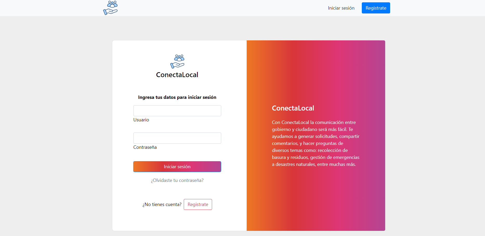
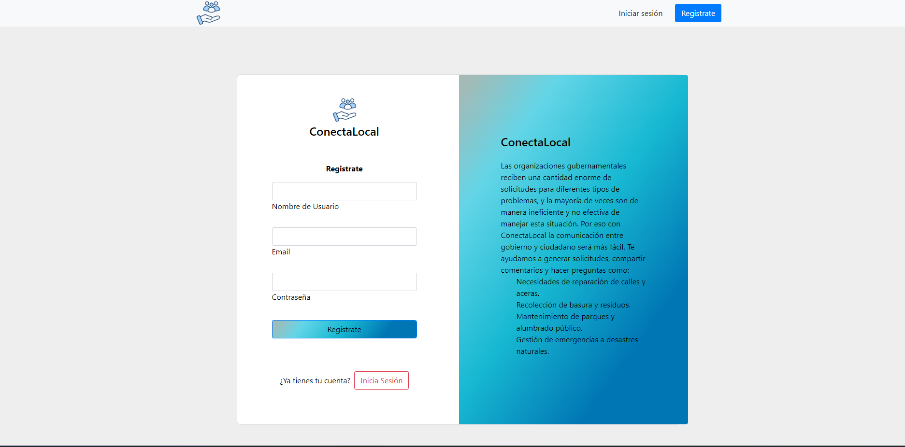
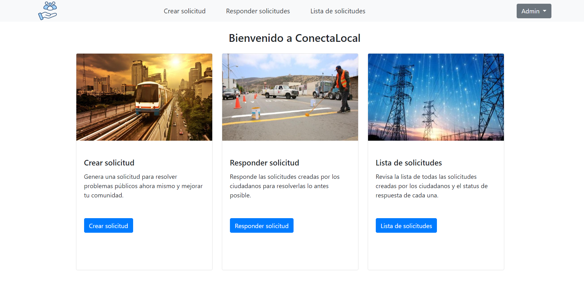
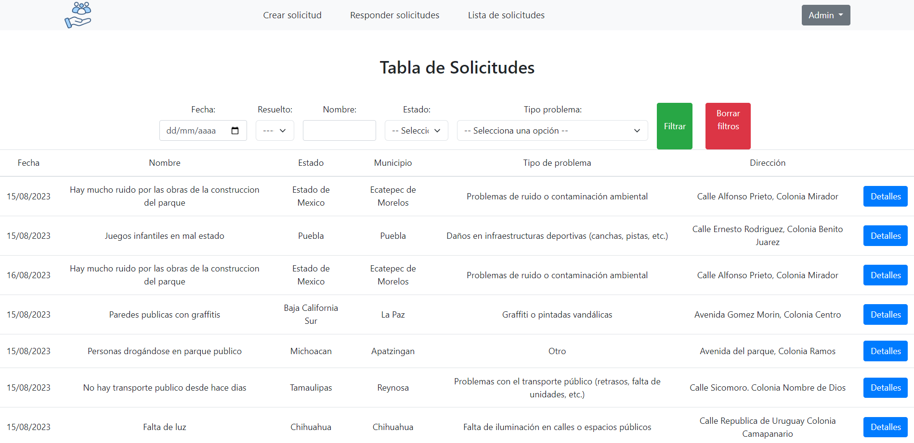
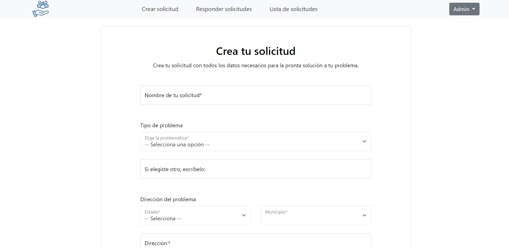
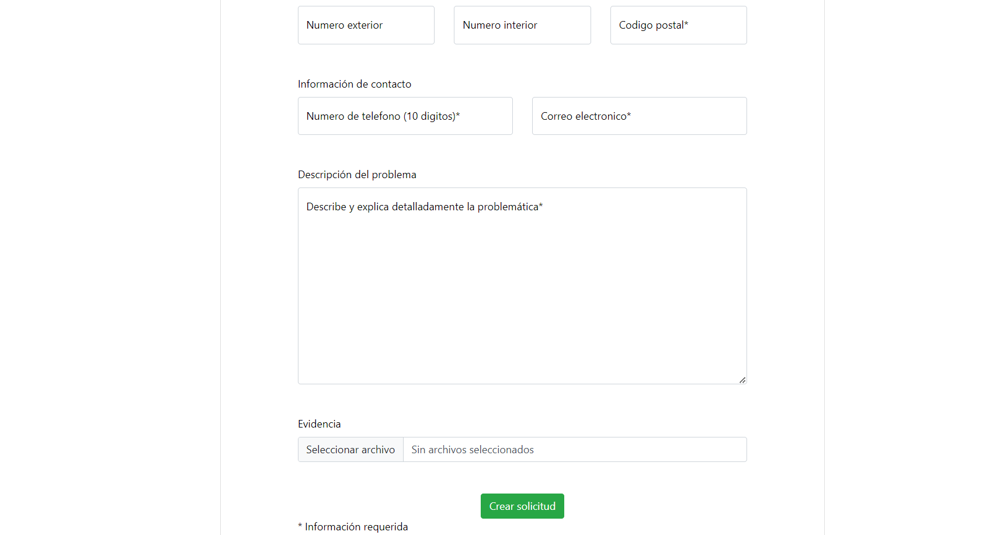
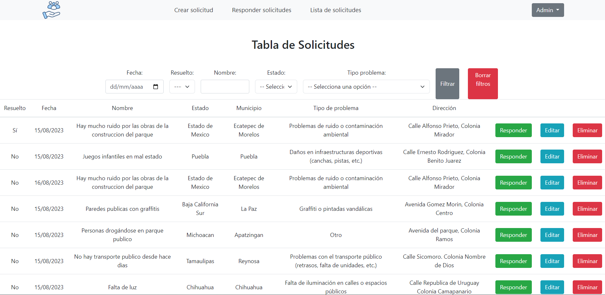
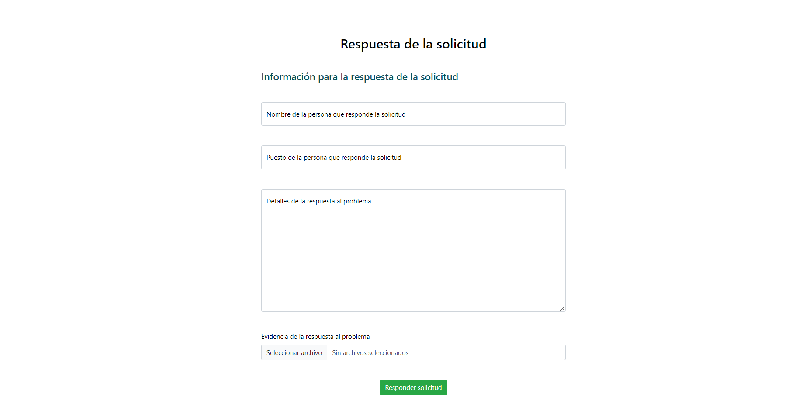

ContectaLocal








🏛️ Descripción
ContectaLocal es una aplicación desarrollada para facilitar la gestión de solicitudes ciudadanas por parte de instituciones gubernamentales. Permite registrar, responder y consultar solicitudes de manera eficiente, con una arquitectura escalable y segura.
⚙️ Funcionalidades Principales
- Registro y consulta de solicitudes de servicio público.
- Panel de respuestas con historial de seguimiento.
- Generación de reportes estadísticos y en Excel.
- Sistema de autenticación con roles de usuario.
- Gestión de datos persistentes en PostgreSQL.
- API REST documentada para comunicación con sistemas externos.
- Inicio de sesión y registro seguro para usuarios del sistema.
🚀 Buenas Prácticas Aplicadas
- Arquitectura MVC usando Django como backend robusto.
- Documentación completa de la API REST con OpenAPI.
- Integración con servicios externos vía requests autenticados.
- Seguridad basada en middleware y control de permisos.
- Diseño responsivo y modular con Bootstrap.
🛠️ Tecnologías Utilizadas
Python
Django
JavaScript
Bootstrap
PostgreSQL
Open311
Excel Export